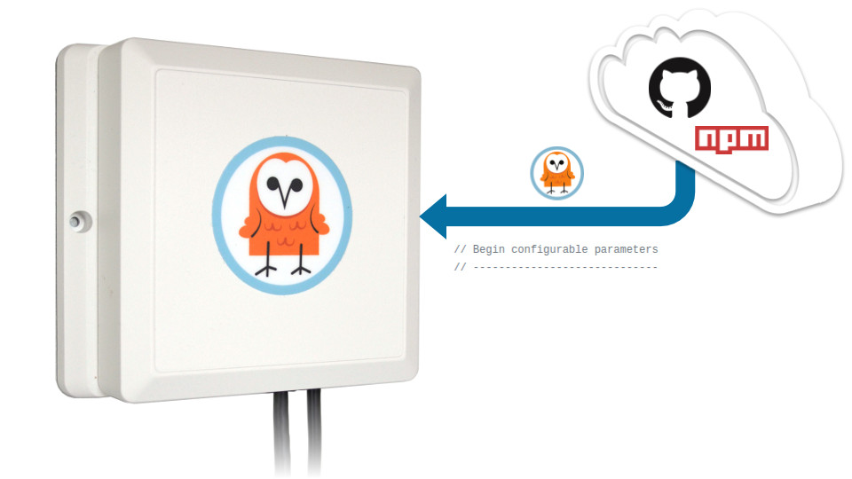

Configure an Owl-in-One
Our step-by-step guide to configure the WiFi and/or program the software of an Owl-in-One.
The TL;DR (Too Long; Didn't Read)
Learn how to configure an Owl-in-One to connect to a wireless network and forward data to the right place.
- What will this accomplish?
- An Owl-in-One with network connectivity forwarding data to the target server(s).
- Do I need to do this?
- Only if you require a different configuration than the default.
- Is there an easier way?
- You can request custom WiFi and target settings when ordering these devices.
Prerequisites
A computer with Node.js, npm and the t2-cli utility installed.
-
Install Tessel 2
A step-by-step guide to install the t2-cli utility and its prerequisites.
Configuring the WiFi Step 1 of 4
Connect the Owl-in-One to the WiFi network.
- What are we programming?
- The Owl-in-One is based on the Tessel 2 platform and is programmed as such.
- Any prerequisites?
- Yes. This step requires a computer with the t2-cli package (see above).
Connect to the Owl-in-One via USB Part 1
From the computer with the installed prerequisites :
- Connect the USB cable of the Owl-in-One to the computer
- Wait approximately 30 seconds for the device to boot 30 sec
The Owl-in-One is now ready to accept commands.
Connect to the WiFi network Part 2
From the same computer , open a terminal and then:
- Configure the WiFi with the command
t2 wifi -n "ssid" -p "password", replacing ssid and password with the appropriate credentials
If the command does not complete in a timely fashion, terminate with Ctrl+C and run the command again.
If the SSID or password includes a special character (ex: "exclamation!"), escape this with a forward slash (ex: "exclamation\!") for the command to be interpreted correctly.
Confirm the WiFi connection Part 3
From the same computer , and in the same terminal :
- Query the connection status with the command
t2 wifi - Observe from the terminal output the intended SSID and confirm that the Owl-in-One has received an IP address.
The Owl-in-One is now connected to the WiFi network.
Downloading the Owl-in-One software Step 2 of 4
Clone the tessel-edge software repository from GitHub and install the dependencies.
- What software?
- The Owl-in-One runs lightweight Node.js software.
- Any prerequisites?
- Yes. This step requires git and npm.
- Do I do this each time?
- No. Complete this step just once to program as many Owl-in-Ones as required.
Has this step already been completed on the computer? If so, skip this step!
Clone the tessel-edge repository Part 1
From the computer satisfying the prerequisites, open a terminal and then:
- Browse to a folder where the software will be cloned
- Clone the tessel-edge repository with the command
git clone https://github.com/reelyactive/tessel-edge.git
The tessel-edge software is now cloned to the computer.
Install package dependencies Part 2
From the same computer , and in the same terminal :
- Browse to the root of the tessel-edge repository
- Install dependencies with the command
npm install
The tessel-edge software now has all package dependencies installed.
Configuring the Owl-in-One software Step 3 of 4
Configure the software and flash it to the Owl-in-One.
- Do I need to do this?
- Complete this step only if a change to the Owl-in-One's configuration is required.
- Any prerequisites?
- Yes. This step requires a computer with the tessel-edge software downloaded (see previous step).
Update targets Part 1
From the computer with the downloaded tessel-edge software, open a terminal and then:
- Browse to the root of the tessel-edge repository
- Open the file config.js for editing
- Update the RADDEC_TARGETS as below, changing the "xxx.xxx.xxx.xxx" to the target IP address or hostname
const RADDEC_TARGETS = [
{ host: "xxx.xxx.xxx.xxx", port: "50001", protocol: "udp" }
];The Owl-in-One can send to multiple targets. Add as many as required to the array (ex: [ { }, { } ]).
The tessel-edge software is now configured to forward data to the target IP address(es). Let's program the Owl-in-One!
Flashing the software to the Owl-in-One Step 4 of 4
Connect the Owl-in-One via USB and flash the configured software.
- Do I need to do this?
- Again, complete this step only if a change to the Owl-in-One's configuration is required.
- Any prerequisites?
- Yes. This step requires a computer with the t2-cli package (see above).
Connect to the Owl-in-One via USB Part 1
From the same computer :
- Connect the USB cable of the Owl-in-One to the computer
- Wait approximately 30 seconds for the device to boot 30 sec
The Owl-in-One is now ready to accept commands.
Push the software to the Owl-in-One Part 2
From the same computer , open a terminal and then:
- Browse to the local tessel-edge repository
- Push the software to the Owl-in-One with the command
t2 push index.js30 sec

If the command does not complete in a timely fashion, terminate with Ctrl+C and run the command again.
The software will begin to run, and will start automatically whenever the Owl-in-One is powered on.
Do you like this document template?
It's based on Bootstrap 4 MIT and Font Awesome 5 (Free) MIT. Our Web Style Guide MIT has all the details. Sharing and feedback are encouraged!
reelyActive's Web Style GuideWhere to next?
Continue exploring our open architecture and all its applications.
-

Create a WLAN of Owl-in-Ones and a laptop
Our step-by-step guide to create a local wireless network by configuring an Owl-in-One as an access point. -

diyActive Home
The home for reelyActive developers.